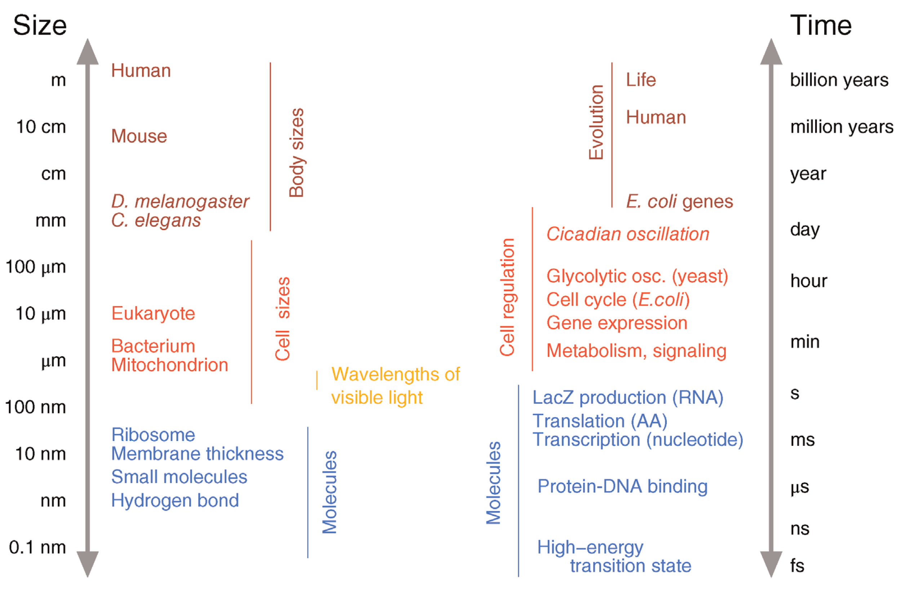
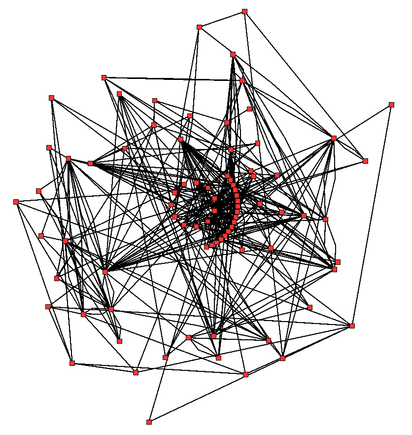
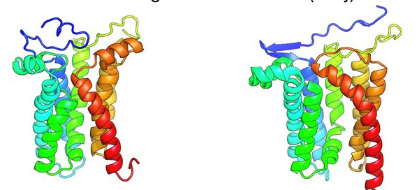
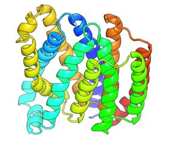
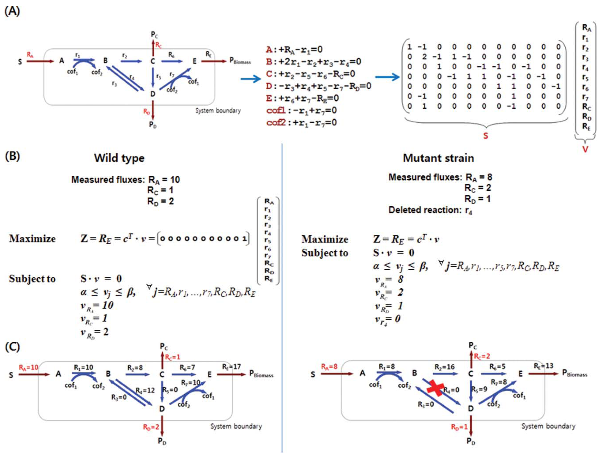
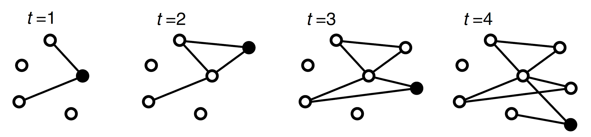

04
Modelos
Biologia
As entidades biológicas e suas propriedades possuem diferentes níveis organizacionais e diferentes escalas de tempo.

Evolução
As entidades biológicas evoluem;
Uma consequência da evolução é a similaridade da biologia entre os organismos.
{kind=link}
Evolução (cont.)
- A semelhança favorece o uso de:
- Organismos modelo
- Transferência crítica de conhecimento obtido em um organismo para outro.
- Aplicações
- Previsão da função de proteínas de similares;
- Reconstrução de árvores filogenéticas;
- Identificação de sequências reguladoras de DNA através de comparações.
- No entanto, processo evolutivo também leva a variações genéticas:
- Medicina personalizada.

Atenção
Fenômenos biológicos possuem processos complexos que freqüentemente não podem ser explicados a partir de primeiros princípios e cujo resultado não pode ser confiavelmente previsto a partir da intuição.
É difícil prever o comportamento global de um sistema complexo a partir do conhecimento de suas partes.
Modelos e modelagem
A modelagem matemática e as simulações computacionais podem nos ajudar a entender a natureza interna e a dinâmica desses processos e chegar a previsões sobre seu desenvolvimento futuro e o efeito das interações com o ambiente.
O que é um modelo?
Definição
De maneira geral, um modelo é uma representação abstrata de objetos ou processos que consegue explicar alguma característica dos mesmos.
CUIDADO!
Modelos são sempre aproximações do real, gerando comportamento ou respostas também aproximadas.
Exemplo: modelo gráfico de vias metabólicas

Exemplo: Modelo de metabolismo em rede

Exemplo: Modelo matemático de crescimento bacteriano
{kind=link}
Modelos
- Para que um modelo em Biologia de Sistemas seja útil em simulações:
- É essencial garantir sua fidelidade, ou seja, sua capacidade de prever corretamente o comportamento dinâmico do sistema biológico — pelo menos nos aspectos relevantes aos objetivos do estudo.
- Muitos modelos são construídos com base em leis físicas bem-estabelecidas, como a termodinâmica de reações químicas e a cinética enzimática, o que confere robustez teórica à sua estrutura matemática. No entanto, a validação experimental contínua é crucial, pois a complexidade dos sistemas biológicos frequentemente exige simplificações que devem ser criticamente avaliadas.
Modelos (cont.)
Modelos computacionais podem fazer afirmações específicas sobre um sistema de interesse.
Suas previsões podem ser parcialmente justificadas por experimentos e conhecimento bioquímico direto, e parcialmente por extrapolação a partir de outros sistemas biológicos.
O conhecimento estabelecido sobre um sistema pode assim ser resumido em uma formulação matemática coerente.
Na biologia experimental, o termo ‘modelo’ também é usado para denotar um organismo ou linhagem celular que é especialmente adequado para a realização de experimentos.
Propósito e adequação dos modelos
A modelagem é um processo subjetivo e seletivo.
Um modelo representa apenas aspectos específicos da realidade, mas pode ser suficiente se construído para responder a uma pergunta particular.
Exemplos
- Objetivo: Prever saídas do sistema a partir de entradas.
- Neste caso, o modelo precisa apenas capturar a relação entrada-saída correta, podendo ser tratado como uma caixa-preta (ex.: redes neurais).
- Objetivo: Elucidar um mecanismo biológico.
- Aqui, a estrutura interna e as interações entre componentes devem ser representadas de forma realista e mecanicista.
Propósito e adequação dos modelos (cont.)
Os modelos podem ser:
- Gerais
- O modelo cinético de Michaelis-Menten.
- Específicos
- Modelos de estrutura de proteínas.
- Modelos de deterioração de mitocôndrias.

Propósito e adequação dos modelos (cont.)
Os modelos podem ser:
Modelos Gerais:
- São simplificados e amplamente aplicáveis, focando em princípios universais (ex.: redes de interação proteína-proteína conservadas em múltiplas espécies). Capturam padrões gerais, mas omitem detalhes específicos.
Modelos Específicos:
- São detalhados e contextualizados, incorporando parâmetros e condições particulares de um sistema biológico (ex.: modelo cinético de uma via metabólica em uma linhagem celular humana sob hipóxia). Buscam representar fielmente um cenário experimental concreto.

George Box
“Essencialmente, todos os modelos estão errados, mas alguns podem ser úteis”
George Box
{kind=link}
Modelagem e Experimentação
Modelos só possuem valor real quando podem ser comparados com experimentos e, para tanto, tal comparação depende da qualidade de tais experimentos.
Modelo: algumas características
Modelos dependem de hipóteses específicas e rigorosas: que definem claramente o escopo e as premissas do estudo.
Modelos revelam lacunas no conhecimento: durante sua construção, a necessidade de quantificar interações ou componentes expõe falhas no entendimento atual do sistema.
Modelagem oferece independência do objeto real: o sistema pode ser estudado de forma abstrata, sem interferência direta ou limitações experimentais imediatas.
Tempo e espaço são flexíveis: escalas temporais (ex.: milissegundos a anos) e espaciais (ex.: molecular a organismal) podem ser comprimidas ou expandidas conforme a necessidade.
Modelagem é economicamente vantajosa: simulações computacionais têm custo reduzido comparado a experimentos laboratoriais complexos ou de longa duração.
Modelos mitigam questões éticas: reduzem ou eliminam o uso de organismos vivos, células primárias ou tecidos em fases exploratórias de pesquisa.
Modelo: algumas características (cont.)
- Simulação de Cenários Inacessíveis: Permitem testar condições extremas, perigosas ou eticamente inviáveis no mundo real.
- Análise Temporal Dinâmica: Facilitam o rastreamento da evolução de compostos ou moléculas ao longo do tempo.
- Perturbações Controladas:
- Permitem manipular o ambiente de formas impossíveis experimentalmente.
- Habilitam a alteração seletiva de elementos específicos sem afetar outros componentes do sistema.
- Reprodutibilidade e Varredura de Condições: Simulações podem ser repetidas infinitamente e sob diversas condições.
- Representação Clara de Resultados:
- Os resultados são expressos em termos matemáticos precisos.
- Visualizações gráficas simplificam a interpretação do comportamento do sistema.
- Predições Testáveis: Geram hipóteses quantitativas e fundamentadas para validação experimental.
Modelos: matemáticos e computacionais
A tentativa de descrever problemas biológicos usando linguagem matemática frequentemente revela lacunas em nosso conhecimento e exige uma clarificação conceitual rigorosa.
Modelos computacionais surgem como ferramentas para testar hipóteses sobre fenômenos biológicos de forma controlada e quantitativa. Além disso, eles permitem simular processos biológicos complexos sob condições variadas, oferecendo insights inalcançáveis apenas por métodos experimentais tradicionais.
Noções básicas de modelos computacionais
Escopo do modelo
{kind=link}
- Um modelo pode descrever somente alguns aspectos do sistema e todas as outras propriedades do sistema podem ser simplificadas ou negligenciadas totalmente.
- Exemplo: o meio celular e concentração de metabólitos secundários.
- É difícil construir modelos de maneira que as características que foram ignoradas não comprometam os resultados básicos do modelo.
Declarações do modelo
Declarações do modelo (cont.)
- Restrições de Igualdade e Desigualdade:
- Fundamentais em modelos baseados em restrições, ex.: Análise de Balanço de Fluxo (FBA).
- Igualdade: Representam conservação de massa, ex.: \(A + B → C\).
- Desigualdade: Limitam intervalos de fluxo metabólico ou expressão gênica, ex.: \(0 ≤ v₁ ≤ V_max\).
Declarações do modelo (cont.)
- Postulados de Otimalidade:
- Supõem que o sistema evolui para maximizar/minimizar uma função objetivo (ex.: maximização de biomassa em FBA).
Declarações do modelo (cont.)
- Processos Estocásticos:
- Descrevem sistemas onde a aleatoriedade é crucial (ex.: expressão gênica estocástica, modelada por Equações Mestras ou Simulação de Gillespie).
Declarações do modelo (cont.)
- Declarações Probabilísticas:
- Atribuem distribuições de probabilidade a parâmetros ou estados do sistema para capturar variabilidade (ex.: entre células em uma população ou incerteza experimental).
Estado do sistema
Definição
O estado de um sistema representa um instante completo de todas as suas propriedades relevantes em um dado momento.
É formalmente descrito por um conjunto de variáveis de estado (ex.: concentrações, números moleculares, níveis de atividade), cujos valores definem unequivomente a condição atual do sistema.
Um modelo deve encapsular informação suficiente para, a partir do estado atual, prever unequivocamente a evolução temporal do sistema sob condições definidas.
A definição específica do estado varia conforme a abordagem de modelagem:
- Modelos Determinísticos (ex.: EDOs):
- O estado é um vetor de concentrações contínuas de todas as espécies bioquímicas relevantes (ex.: \([S](t),[P](t)\)).
- Modelos Estocásticos (ex.: Gillespie):
- O estado é a contagem discreta de moléculas de cada espécie (ex.: \(nX,nY\)), ou uma distribuição de probabilidade sobre possíveis contagens.
- Modelos Booleanos de Redes Gênicas:
- O estado é um vetor binário (ex.: \(\{0,1\}^n\)), onde cada entrada indica se um gene está ativo (1) ou inativo (0).
Estado do sistema (cont.)
Comportamento Temporal
E um sistema dinâmico, o estado futuro é determinado pelo estado atual.
Em um sistema estocástico, os estados futuros não são precisamente predeterminados. Ao invés disso, cada possível futuro exibe uma certa probabilidade de acontecer.
Constantes, parâmetros e variáveis
São as quantidades dentro de um modelo.
Constantes, parâmetros e variáveis
- Constante: Um valor fixo e universal que não muda entre diferentes contextos ou sistemas.
- Exemplo: A velocidade da luz (\(c\)), a constante de Avogadro, ou a carga do elétron.
- Parâmetro: Um valor que é fixo dentro de um determinado modelo ou contexto experimental, mas que pode variar quando o modelo é aplicado a uma nova situação.
- Exemplo: A taxa máxima de reação (\(V_{max}\)) de uma enzima, que é constante para uma enzima purificada sob condições específicas de pH e temperatura, mas muda se essas condições forem alteradas ou se uma isoenzima diferente for considerada.
- Variável: Uma quantidade que muda ao longo do tempo ou em resposta a outras variáveis dentro do escopo do modelo.
- Exemplo: A concentração de glucose em uma célula (\([GLC]\)), que varia conforme é consumida na glicólise.
Constantes, parâmetros e variáveis
Distinção Parâmetro e Constante é especialmente importante.
Um parâmetro (como a meia-vida de uma proteína) é tratado como constante durante uma simulação para simplificar o modelo, mas seu valor é frequentemente estimado a partir de dados experimentais e pode ser ajustado para diferentes cenários (ex.: um mutante com uma proteína mais estável teria um parâmetro de meia-vida diferente).
Constante
É uma quantidade com valor fixo.
Exemplos
- O número natural \(e\) .
- A constante de Avogadro.
- A constante de Planck
Parâmetros
São quantidades que tem um dado valor, como o valor \(K_m\) de uma enzima em uma reação. Esse valor depende do método usado e das condições experimentais e por isso pode mudar.
Variáveis
São quantidades com valor mutável para o qual o modelo estabelece relações.
As variáveis de estado descrevem o comportamento completo do sistema. Podem assumir valor independentes e cada uma das variáveis é necessária para definir o sistema.
Por exemplo, o diâmetro \(d\) e o volume \(V\) de uma esfera obedece a relação \(V = \frac{\pi d^3}{6}\), onde \(\pi\) e 6 são constantes, \(V\) e \(d\) são variáveis, mas somente uma delas é a variável de estado já que a relação entre elas determina unicamente a outra.
Comportamento de um modelo
Basicamente duas coisas podem influenciar o comportamento de um modelo
Influências do ambiente (entrada).
Processos dentro do sistema.
Classificação de modelos
Modelo determinístico
- A evolução do sistema através dos estados seguintes podem ser predita com o conhecimento do estado atual.
Modelo estocástico
- Já o modelo estocástico nos dá a distribuição de probabilidade para os possíveis estados futuros.
Classificação de modelos (cont.)

Modelo estrutural ou qualitativo
É uma representação que descreve:
Componentes de um sistema biológico (como genes, proteínas ou metabólitos)
Suas interações ou relações, sem quantificar dinâmicas temporais ou valores numéricos.
Seu foco está na topologia da rede (quem interage com quem) e na lógica das interações (ativação, inibição, regulação), permitindo explorar propriedades emergentes como modularidade, robustez e fluxo de informação.
Classificação de modelos (cont.)
Modelo Discreto
Definição: Tempo, estado e espaço assumem valores em um conjunto enumerável (ex.: números inteiros, categorias finitas).
Exemplos:
Redes Booleanas: Genes representados como “LIGADO” (1) ou “DESLIGADO” (0).
Autômatos Celulares: Células em estados discretos (ex.: saudável/infectada/morta) em uma grade espacial.
Cadeias de Markov Temporais: Eventos em tempos discretos (ex.: gerações em modelos populacionais).
Classificação de modelos (cont.)
Modelo Contínuo
Definição: Tempo, estado e espaço assumem valores em intervalos contínuos (ex.: números reais).
Exemplos:
Equações Diferenciais Ordinárias (EDOs): Concentrações de metabólitos variando continuamente no tempo (ex.: modelo de cinética enzimática de Michaelis-Menten).
Modelos Baseados em Equações Diferenciais Parciais (EDPs): Variação espacial contínua de gradientes de morfogenes em desenvolvimento embrionário.
Classificação de modelos (cont.)
Reversibilidade
Definição: Um processo é reversível se pode ocorrer tanto na direção direta quanto na inversa, frequentemente mantendo as mesmas propriedades dinâmicas (ex.: taxas de reação).
Irreversibilidade
Definição: Ocorre quando apenas uma direção é termodinamicamente ou cineticamente favorável, frequentemente devido a perda de energia ou condições celulares específicas (ex.: hidrólise de ATP).
Exemplo Biológico
Reversível: A ligação de uma molécula sinalizadora a um receptor (que pode dissociar).
Irreversível: A ativação proteolítica de uma caspase em uma cascata apoptótica.
Classificação de modelos (cont.)
Periodicidade
Definição: Refere-se a comportamentos que se repetem em intervalos regulares de tempo, forming ciclos previsíveis.
Exemplo Biológico
Ciclos circadianos: Oscilações de ~24 horas na expressão gênica (ex.: genes Clock e Bmal1).
Ciclo celular: Transições entre fases (G1, S, G2, M) controladas por ciclinas e cinases.
Oscilações de cálcio: Pulsos de liberação de \(Ca_{2+}\) em células excitáveis.
Estado estacionário - Steady state
Um estado estacionário é atingido quando todas as variáveis de estado de um sistema (ex.: concentrações de metabólitos, níveis de expressão gênica) permanecem constantes ao longo do tempo, ou seja, suas derivadas temporais são zero (\(\frac{d[X]}{dt}=0\)).
Estado estacionário - Steady state (cont.)
Equilíbrio Dinâmico (≠ Equilíbrio Termodinâmico)
No estado estacionário, fluxos ainda ocorrem (ex.: reações químicas, produção e degradação de proteínas), mas as taxas de entrada e saída para cada pool se equilibram perfeitamente, resultando em concentrações constantes.
É um conceito central em sistemas abertos (como células), que trocam matéria e energia com o meio.
Estabilidade:
Um estado estacionário pode ser estável (o sistema retorna a ele após uma pequena perturbação) ou instável (uma pequena perturbação afasta o sistema irreversivelmente).
Estado estacionário - Steady state (cont.)
Metabolismo: Em uma via metabólica, um estado estacionário é alcançado quando a taxa de produção de um metabólito é igual à sua taxa de consumo (ex.: concentração de ATP constante sob demanda energética estável).
Homeostase: A manutenção de um nível constante de glicose no sangue é um estado estacionário dinâmico, equilibrando ingestão, secreção de insulina/glucagon e consumo celular.
Expressão Gênica: O nível de uma proteína pode atingir um estado estacionário onde sua taxa de síntese é igual à sua taxa de degradação.
A atribuição de modelos não é única
Um processo pode ser descrito por mais de uma maneira
A modelagem de sistemas biológicos é inerentemente não única, significando que um mesmo processo ou entidade biológica pode ser representado por múltiplos modelos formais, cada um com diferentes níveis de abstração, pressupostos e objetivos.
A atribuição de modelos não é única
Um processo pode ser descrito por mais de uma maneira
Múltiplas Escalas e Perspectivas
- Uma mesma entidade (ex.: uma proteína) pode ser modelada em escalas atômicas (dinâmica molecular), celulares (cinética enzimática) ou de redes (interações proteína-proteína).
A atribuição de modelos não é única
Um processo pode ser descrito por mais de uma maneira
Abstração Seletiva
- Diferentes modelos destacam aspectos distintos do sistema, como sua estrutura topológica (modelos qualitativos) ou dinâmica temporal quantitativa (modelos baseados em EDOs).
A atribuição de modelos não é única
Um processo pode ser descrito por mais de uma maneira
Diversidade de Dados Experimentais
- Diferentes técnicas experimentais (ex.: microscopia, espectrometria de massa, RNA-seq) geram dados heterogêneos, que podem demandar frameworks de modelagem distintos para sua interpretação.
A atribuição de modelos não é única
Um processo pode ser descrito por mais de uma maneira
Implicações
A escolha do modelo depende criticalmente da pergunta biológica específica.
Modelos concorrentes podem ser igualmente válidos para explicar um fenômeno, mas sob contextos diferentes.
A integração de múltiplos modelos (ex.: multi-escala) é frequentemente necessária para uma compreensão abrangente.
Integração de dados multi-ômicos
Uma parte importante da Biologia de Sistemas é a integração de dados devido ao grande volume de dados ômicos.
A integração ocorre em três níveis (não universalmente padronizados, mas amplamente aceitos):
Baixo nível: Foco em formatos, armazenamento e transferência de dados brutos ou pré-processados.
Alto nível: Representação unificada de modelos e vias biológicas (ex.: SBML, CellML).
Nível mais alto (interpretativo): Correlação e análise conjunta de dados multi-ômicos para extrair significado biológico.

Modelos de grafos
Erdös-Rényi (ER): modelo mais básico de redes aleatórias.
- Grafo não-direcionado, sem laços e múltiplas conexões.
\(E_{max} = \frac{N_v\times(N_v-1)}{2}\)
- A maioria dos vértices tem graus semelhantes.
- Não demonstra coesividade, que é natural a redes empíricas.
- Limitações para a comparação de ER e rede empíricas:
- Distribuição de graus homogênea
- Falta de coesividade local
- Falta de correlação de grau, nós com muitos graus não tendem a se conectar entre si
- Não é livre de escala
- Não possui modularidade
- Reproduz o efeito de mundo pequeno.
{kind=link}
{kind=link}
Modelos de grafos (cont.)
| Característica | Rede Erdös-Rényi (Aleatória) | Redes Reais (Biológicas) |
|---|---|---|
| Distribuição de graus | Homogênea (Poisson) | Heterogênea (hubs + nós pouco conectados) |
| Modularidade | Ausente | Presente (módulos funcionais) |
| Coesividade | Baixa | Alta (clusters de interação) |
| Mundo Pequeno | Sim | Sim |
| Livre de Escala | Não | Sim |
Modelos de grafos (cont.)
Watts-Strogatz (WS)
É um modelo de rede que gera redes com alto agrupamento local (modularidade) e baixo caminho médio (efeito “mundo pequeno”).
Imagine uma rede onde a maioria das conexões é com vizinhos próximos (formando “panelinhas” ou clusters), mas com alguns poucos atalhos que conectam grupos distantes.

Modelos de grafos (cont.)
Watts-Strogatz (WS)
Como é construído?
Começa com uma rede regular: Os vértices são dispostos em um anel (ou grade), cada um conectado aos seus \(k\) vizinhos mais próximos (ex.: \(k=2\) para cada lado). Isso cria clusters locais muito coesos.
Reconectação aleatória: Com uma probabilidade \(p\), cada aresta é reatribuída a um vértice escolhido aleatoriamente em toda a rede. Esses reconexões aleatórias criam atalhos entre clusters distantes.
{kind=link}
Modelos de grafos (cont.)
Watts-Strogatz (WS): Aplicação no Espalhamento de Doenças Infecciosas.
Alto Agrupamento (Alta Modularidade): Representa bem como as infecções se espalham rapidamente em grupos fechados (famílias, escolas, locais de trabalho).
Atalhos (Mundo Pequeno): Modela os super-espalhadores ou viagens que conectam cidades ou países distantes, permitindo que a doença se propague globalmente em pouco tempo.
Exemplo
Uma doença pode se espalhar lentamente em uma cidade (dentro dos clusters) até que um indivíduo infectado pegue um avião (atalho) e inicie um novo surto em outro continente, conectando os dois clusters e acelerando a pandemia.
Modelos de grafos (cont.)
Barabási-Albert (BA): o problema que o Modelo BA resolve:
- Os modelos Erdös-Rényi (ER) e Watts-Strogatz (WS) não conseguiam explicar uma propriedade fundamental de redes reais (como a internet, redes sociais e redes biológicas): a existência de hubs (nós superconectados).
- O modelo BA foi criado para explicar justamente como essas redes livres de escala surgem.
Modelos de grafos (cont.)
Barabási-Albert (BA)
O modelo é baseado em dois princípios simples que imitam o crescimento de redes reais:
- Crescimento (Growth): A rede não é estática. Ela começa com um pequeno número de nós e novos nós são adicionados um a um ao longo do tempo.
Uma rede de interação proteína-proteína não surgiu completa; novos genes e proteínas foram adicionados ao longo da evolução.
Ligação Preferencial (Preferential Attachment): Quando um novo nó é adicionado, ele tende a se conectar preferencialmente a nós que já são bem conectados (que têm um grau alto). - Efeito o rico ficam mais ricos (rich-get-richer).
Em uma rede de interação, uma proteína que já tem muitas conexões (um hub) é mais provável de ser recrutada para novas funções e interações do que uma proteína pouco conectada.
Modelos de grafos (cont.)

Modelos de grafos (cont.)
Resultado: Redes Livres de Escala
- Essas duas regras simples geram redes com uma distribuição de graus que segue uma lei de potência.
- Isso significa:
- A maioria dos nós tem poucas conexões.
- Uns poucos nós (os hubs) têm um número extraordinariamente alto de conexões.
- Não há um típico número de conexões, a rede é livre de escala .